\(\frac{6y60}{66} =\) [on both sides, divide by 6]
\(y =10 ^{\circ}\)
\(\angle UWY = 6y + 2 = 6(10) + 2 = 62 ^{\circ}\) .
We can conclude that \(\angle XWV = \angle UWY\) , because they are vertically opposite angles as well as exterior angles.
- 1.Can \(30 ^{\circ}\) , \(60 ^{\circ}\) and \(90 ^{\circ}\) be the angles of a triangle?
- 2.Can you draw a triangle with \(25 ^{\circ}\) , \(65 ^{\circ}\) and \(80 ^{\circ}\) as angles?
- 3.In each of the following triangles, find the value of x.
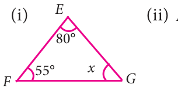
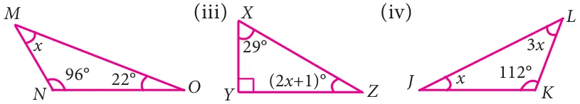
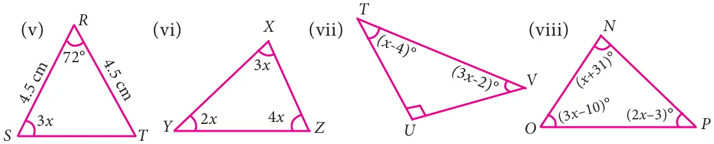
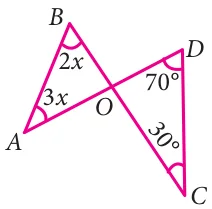
- 4.Two line segments AD and BC intersect at O. Joining AB and
DC we get two triangles, AOB and DOC as shown in the figure. Find the \(\angle A\) and \(\angle B\).
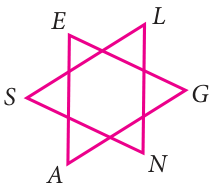
- 5.Observe the figure and find the value of
\(\angle A + \angle N + \angle G + \angle + \angle + \angle L E S\) .
- 6.If the three angles of a triangle are in the ratio 3:5: 4 , then find them.
- 7.In RST , \(\angle S\) is \(10 ^{\circ}\) greater than \(\angle R\) and \(\angle T\) is \(5 ^{\circ}\) less than \(\angle S\) , find the three
angles of the triangle.
- 8.InABC , if \(\angle B\) is 3 times \(\angle A\) and \(\angle C\) is 2 times \(\angle A\), then find the angles.
- 9.In XYZ , if \(\angle X\) : \(\angle Z\) is 5 : 4 and \(\angle Y = 72 ^{\circ}\) . Find \(\angle X\) and \(\angle Z\)
- 10.In a right angled triangle ABC, \(\angle B\) is right angle, \(\angle\) Ais x +1 and \(\angle C\) is \(2x + 5\) . Find
\(\angle\) Aand \(\angle C\) .
- 11.In a right angled triangle MNO, \(\angle N = 90 ^{\circ}\) , MO is extended to P. If \(\angle NOP = 128 ^{\circ}\) ,
find the other two angles of MNO .
- 12.Find the value of x in each of the given triangles.
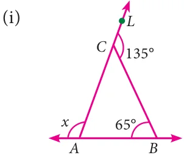
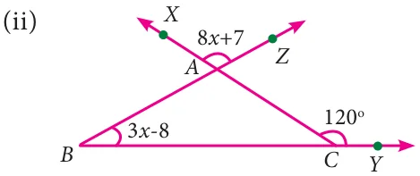
- 13.In LMN, MN is extended to O. If ÐMLN \(= 100 - x\), \(\angle LMN = 2x\) and
\(\angle LNO = 6x - 5\), find the value of x.
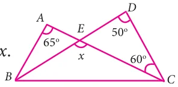
- 14.Using the given figure find the value of x.
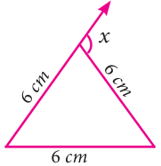
- 15.Using the diagram find the value of x.
Objective type questions
- 16.The angles of a triangle are in the ratio 2:3:4. Then the angles are
- (i)20, 30, 40 (ii) 40, 60, 80 (iii) 80, 20, 80 (iv) 10, 15, 20
- 17.One of the angles of a triangle is \(65 ^{\circ}\) . If the difference of the other two angles is \(45 ^{\circ}\) ,
then the two angles are
- (i)\(85 ^{\circ}\) , \(40 ^{\circ} (ii)70 ^{\circ}\) , \(25 ^{\circ}\) (iii) \(80 ^{\circ}\) , \(35 ^{\circ}\) (iv) \(80 ^{\circ}\) , \(135 ^{\circ}\)
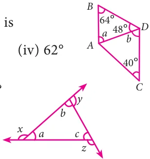
- 18.In the given figure, AB is parallel to CD. Then the value of b
- (i)\(112 ^{\circ}\) (ii) \(68 ^{\circ}\) (iii) \(102 ^{\circ}\)
- 19.In the given figure, which of the following statement is true?
- (i)\(x + y + z = 180 ^{\circ}\) (ii) \(x + y + z = a + b + c\)
- (iii)\(x + y + z = 2(a + b +\) c) (iv) \(x + y + z = 3(a + b +\) c)
- 20.An exterior angle of a triangle is \(70 ^{\circ}\) and two interior opposite angles are equal. Then
measure of each of these angle will be
- (i)\(110 ^{\circ}\) (ii) \(120 ^{\circ}\) (iii) \(35 ^{\circ}\) (iv) \(60 ^{\circ}\)
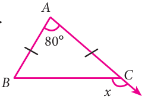
- 21.In a ΔABC, \(AB = AC\). The value of x is ____.
- (i)\(80 ^{\circ}\) (ii) \(100 ^{\circ}\)
- (iii)\(130 ^{\circ}\) (iv) \(120 ^{\circ}\)
- 22.If an exterior angle of a triangle is \(115 ^{\circ}\) and one of the interior opposite angles is \(35 ^{\circ}\) ,
then the other two angles of the triangle are
- (i)\(45 ^{\circ}\) , \(60 ^{\circ}\) (ii) \(65 ^{\circ}\) , \(80 ^{\circ}\) (iii) \(65 ^{\circ}\) , \(70 ^{\circ}\) (iv) \(115 ^{\circ}\) , \(60 ^{\circ}\)